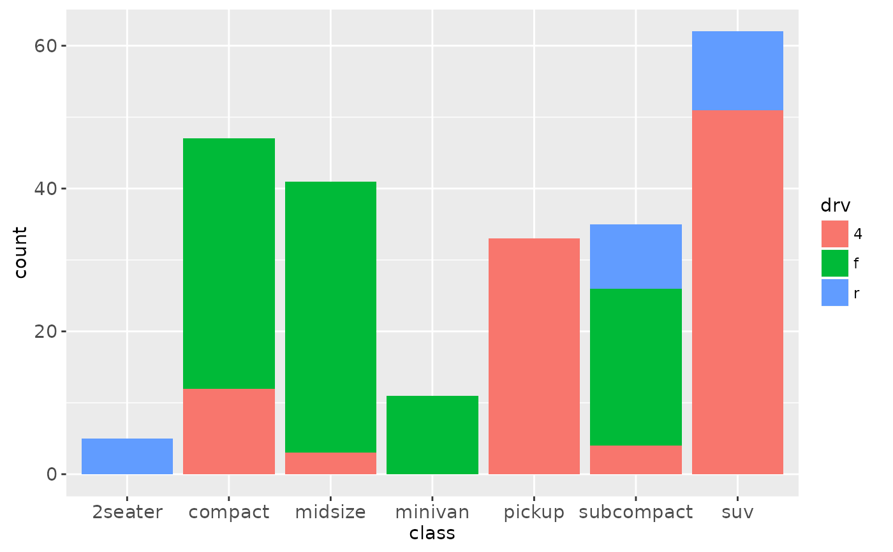

There are two types of bar charts, determined by what is mapped to bar
height. By default, geom_bar uses stat="count" which makes the
height of the bar proportion to the number of cases in each group (or if the
weight aethetic is supplied, the sum of the weights). If you want the
heights of the bars to represent values in the data, use
stat="identity" and map a variable to the y aesthetic.
Usage
geom_bar(
mapping = NULL,
data = NULL,
stat = "count",
position = "stack",
...,
width = NULL,
binwidth = NULL,
na.rm = FALSE,
show.legend = NA,
inherit.aes = TRUE
)
stat_count(
mapping = NULL,
data = NULL,
geom = "bar",
position = "stack",
...,
width = NULL,
na.rm = FALSE,
show.legend = NA,
inherit.aes = TRUE
)Arguments
- mapping
Set of aesthetic mappings created by
aesoraes_. If specified andinherit.aes = TRUE(the default), it is combined with the default mapping at the top level of the plot. You must supplymappingif there is no plot mapping.- data
The data to be displayed in this layer. There are three options:
If
NULL, the default, the data is inherited from the plot data as specified in the call toggplot.A
data.frame, or other object, will override the plot data. All objects will be fortified to produce a data frame. Seefortifyfor which variables will be created.A
functionwill be called with a single argument, the plot data. The return value must be adata.frame., and will be used as the layer data.- position
Position adjustment, either as a string, or the result of a call to a position adjustment function.
- ...
other arguments passed on to
layer. These are often aesthetics, used to set an aesthetic to a fixed value, likecolor = "red"orsize = 3. They may also be parameters to the paired geom/stat.- width
Bar width. By default, set to 90% of the resolution of the data.
- binwidth
geom_barno longer has a binwidth argument - if you use it you'll get an warning telling to you usegeom_histograminstead.- na.rm
If
FALSE(the default), removes missing values with a warning. IfTRUEsilently removes missing values.- show.legend
logical. Should this layer be included in the legends?
NA, the default, includes if any aesthetics are mapped.FALSEnever includes, andTRUEalways includes.- inherit.aes
If
FALSE, overrides the default aesthetics, rather than combining with them. This is most useful for helper functions that define both data and aesthetics and shouldn't inherit behaviour from the default plot specification, e.g.borders.- geom, stat
Override the default connection between
geom_barandstat_count.
Details
A bar chart maps the height of the bar to a variable, and so the base of the bar must always be shown to produce a valid visual comparison. This is why it doesn't make sense to use a log-scaled y axis with a bar chart.
By default, multiple x's occurring in the same place will be stacked atop one
another by position_stack. If you want them to be dodged
side-to-side, see position_dodge. Finally,
position_fill shows relative proportions at each x by stacking
the bars and then stretching or squashing to the same height.
Aesthetics
geom_bar understands the following aesthetics (required aesthetics are in bold):
x
alpha
colour
fill
linetype
size
See also
geom_histogram for continuous data,
position_dodge for creating side-by-side barcharts.
stat_bin, which bins data in ranges and counts the
cases in each range. It differs from stat_count, which counts the
number of cases at each x position (without binning into ranges).
stat_bin requires continuous x data, whereas
stat_count can be used for both discrete and continuous x data.
Examples
# geom_bar is designed to make it easy to create bar charts that show
# counts (or sums of weights)
g <- ggplot(mpg, aes(class))
# Number of cars in each class:
g + geom_bar()
# Total engine displacement of each class
g + geom_bar(aes(weight = displ))
# To show (e.g.) means, you need stat = "identity"
df <- data.frame(trt = c("a", "b", "c"), outcome = c(2.3, 1.9, 3.2))
ggplot(df, aes(trt, outcome)) +
geom_bar(stat = "identity")
# But geom_point() display exactly the same information and doesn't
# require the y-axis to touch zero.
ggplot(df, aes(trt, outcome)) +
geom_point()
# You can also use geom_bar() with continuous data, in which case
# it will show counts at unique locations
df <- data.frame(x = rep(c(2.9, 3.1, 4.5), c(5, 10, 4)))
ggplot(df, aes(x)) + geom_bar()
# cf. a histogram of the same data
ggplot(df, aes(x)) + geom_histogram(binwidth = 0.5)
# \donttest{
# Bar charts are automatically stacked when multiple bars are placed
# at the same location
g + geom_bar(aes(fill = drv))

# You can instead dodge, or fill them
g + geom_bar(aes(fill = drv), position = "dodge")
g + geom_bar(aes(fill = drv), position = "fill")
# To change plot order of bars, change levels in underlying factor
reorder_size <- function(x) {
factor(x, levels = names(sort(table(x))))
}
ggplot(mpg, aes(reorder_size(class))) + geom_bar()
# }